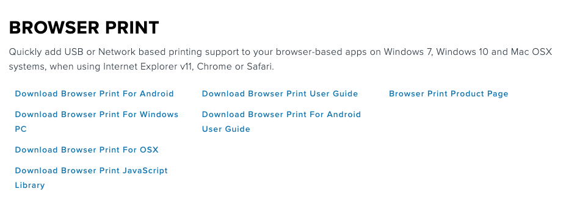

browserPrint appears to detect printer but is unable to print to it. Returns 500 errors and network 'write' errors
Hi our company, Faithlife, uses your Zebra printers for one of our services in our church management software. We are inquiring about a problem we are noticing on the front end that we think our customers will run into involving your “browser print” SDK.
The code that is failing was pulled straight from <em>your documentation</em>. See below.
Here's a video of our interface and the console/network errors. https://recordit.co/d9RbFF6YId
Attached are some screenshots as well of the 500 errors and network errors.
Tdlr: On my MacBook pro the default?type=printers request succeeded and returned a printer then when it tried to do write it would error out and say something like Could not print to printer
<code>export const getDevices = (
onGetDevices: ({
defaultDevice,
devices,
}: {
defaultDevice: IZebraDevice;
devices: IZebraDevice[];
}) => void
) => {
//Get the default device from the application as a first step. Discovery takes longer to complete.
browserPrint.getDefaultDevice(
'printer',
(defaultDevice: IZebraDevice) => {
//Discover any other devices available to the application
browserPrint.getLocalDevices(
(devices: IZebraDevice[]) => {
onGetDevices({
defaultDevice: [defaultDevice, ...devices].find(({ name }) => name),
devices,
});
},
() => {
console.error('Error getting local devices');
},
'printer'
);
},
error => {
console.error(error);
}
);
}; </code>
We also noticed that your test app isn’t sending the request that is failing in our app so we are not sure if your example is representative of the API we are using. Here's what we see in the `default?type=printer` network tab response.
<blockquote> {"deviceType":"printer","uid":"usb#vid_0a5f&pid_0120#D2N204202525#bus_002#addr_004#model_ZTC ZD420-203dpi ZPL","provider":"com.zebra.ds.webdriver.desktop.provider.DefaultDeviceProvider","name":"ZD420-203dpi ZPL (D2N204202525)","connection":"usb","version":4,"manufacturer":"Zebra Technologies"}
Here's what we see in the available network response type.
{}
which looks like an empty array
Here's what we see in the `write` network response tab.
Failed to write to device: Unable to establish connection to ZD420-203dpi ZPL (D2N204202525)
We are also curious if you have any better documentation that won’t require customers to install the SDK as we’ll most likely have people run into problems.
</blockquote>
7 Replies
When you get the 500 error, it means that the printer is unreachable. Are you sure that the printer is truly reachable? You can verify that by opening the settings of the Browser Print client on your MacBook, and click on the Change button next to the Default Devices. Then you should be able to see the the printer that is either connected via USB or the network. If it's not there, then you will get 500 error.
Thanks for the reply. I did the following steps and I do see my printer.
When I click change I get a small window that says "Select Default Device" and under it, it says Device Type: Printer and below that says Device: ZD420-203dpi ZPL...etc.
Here's a screenshot: https://amber.faithlife.com/shares/0Mq0C6YZkKqmy5it
Would you be able to print from the Browser Print demo? The demo code is packed with the Download Browser Print JavaScript Library package, under the sample folder. To run the demo, you can either simply double click on the index.html file, or load the entire sample folder onto your server and access the demo on the server from a local browser.
Yeah i've used this before and so did other developers. https://www.zebra.com/us/en/forms/browser-print-request-osx.html
That works, but it seems to work differently than their example code in the docs because I don't see the same requests when using that as when I use the example code.
I think the question we need to get answered is what is a reliable way for our customers to setup to be able to use browser print?
Bump --
What is the recommended way for users (not developers) to operate the zebra printer? Do you guys have a step-by-step guide that doesn't require the SDK to install?
Hi I am one of one of the developers working on supporting Zebra label printers for the customers of our app.
I downloaded your Browser Print sdk found here: https://www.zebra.com/us/en/products/software/barcode-printers/link-os/…
This download requires a form to be filled out that requires a company name. The files included in the download are more than the print web service. It also includes documentation. Is there documentation that we can refer our customers to that will allow them to setup a zebra label printer, like the ZD420, to work with a web app using your browser print sdk? And a way for them to download the web service without filling out a form and receiving the documentation for development?
Also we are trying to set this up for others internally and as Matt has mentioned, we are noticing some differences with how the example is setup and how the documentation recommends checking for available printers. Matt was having some issues getting everything working on his machine even after installing the sdk. We are hoping we can get this working reliably for customers as well as other developers.
Hi Bryan,
The Browser Print supports Windows PC, Mac OS and Android OS. Depending on the environment your customer will be using, your customer needs to download the corresponding client part of the Browser Print and install it on their Windows PC, Mac OS or Android device. The Browser Print download page provides a list of the client parts of the Browser Print and their corresponding user's guides. See the screenshot below. Your customer should be able to install the clients in their environment by following the user's guide. Just a note: The Browser Print User Guide is for both Windows PC and Mac OS, while the Browser for Android User Guide is specific for Android users. The Browser Print JavaScript Library is for the web app on the server to use. Let us know if any questions.
